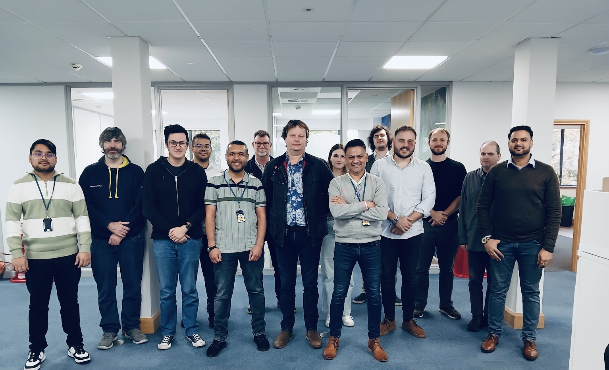

Awash Maskey
I'm
I am a systems and infrastructure engineer transitioning strongly into DevOps and DevSecOps, with experience across telecom, banking, data center operations, and modern platform tooling.
Current focus
- Jenkins, Docker, CI/CD pipelines
- Linux administration and troubleshooting
- Cloudflare, Nginx, secure delivery
- Monitoring with Prometheus & Grafana
- Growing into DevSecOps engineering
About
My background combines software education with hands-on operational experience in telecom, banking, government data centers, and support engineering. I am now shaping that foundation into a focused DevOps and DevSecOps portfolio.
From system administration to security-focused platform engineering
I have worked with Linux systems, enterprise infrastructure, telecom signalling environments, disaster recovery operations, and operational support in uptime-sensitive environments. My recent direction is toward automation, containerization, CI/CD, security integration, and infrastructure reliability.
- Location: London, UK
- Website: awashmasketech.co.uk
- Email: awashmaskeyash@gmail.com
- Degree: BSc in Software / Computer Science track
- Focus: Infrastructure, Linux, DevOps
- Status: Open to roles
Experience
A focused summary of the roles that best show my progression from infrastructure operations into automation, Linux engineering, and DevOps-oriented practice.
Technical Support Admin | Operational Team
Supporting IT operations and contributing to infrastructure, monitoring, and DevOps-aligned workflows.
System Administrator
Worked across Linux and Windows server environments, provisioning infrastructure and supporting secure operations.
Technical Support Engineer – Application
Supported Linux-based telecom platforms, troubleshooting signalling systems and automating operational tasks.
System Security Administrator
Worked on uptime, security controls, disaster recovery readiness, and critical infrastructure operations.
IT / System Administrator – Application
Supported secure banking systems in a regulated environment with emphasis on stability and diagnostics.
Telecom IT Support
Early telecom infrastructure support experience that built my foundation in networked systems and operations.
Featured Projects
The direction I am building toward.

DevSecOps CI/CD Journey
Hands-on project using Jenkins, Docker, secure deployment practices, and real troubleshooting on a VPS.
View Project
Squire Technologies
Linux, telecom signalling support, automation, and operational troubleshooting in production-style environments.
View Experience
Infrastructure Operations
Enterprise infrastructure, data center support, hardware operations, resilience, and continuity-focused work.
View Project
SCTP Multihoming Lab
A focused telecom networking lab validating redundancy, heartbeat behavior, and failover across isolated paths.
View LabServices
I help build, support, secure, and improve infrastructure and delivery workflows across Linux, cloud, networking, and DevOps environments.
Infrastructure Engineering
Building and supporting reliable infrastructure across on-prem, virtualized, and cloud-based environments.
DevOps & Automation
Creating CI/CD workflows, automating deployments, and improving operational efficiency with modern tooling.
DevSecOps
Adding security thinking into delivery pipelines through scanning, hardening, access control, and secure configuration.
Monitoring & Reliability
Improving visibility and uptime with metrics, dashboards, alerting, and practical troubleshooting workflows.
Networking & Telecom Systems
Supporting networked systems, telecom platforms, signalling environments, and infrastructure connectivity challenges.
Linux Administration
Managing Linux servers, debugging services, improving stability, and building strong operational foundations.
Articles
Technical notes and Engineering.
RHEL 7 Troubleshooting Case Study
Systemd, Apache, MariaDB, SSH, and structured Linux root-cause thinking.
Read ArticleCSFB Call Flow Failure Analysis
Trace-based telecom case analysis using Wireshark, lab replication, and flow comparison.
Read ArticleMore Technical Notes
Browse the full article index for additional posts on operations, field work, and engineering learning.
Open ArticlesCertifications
Certifications supporting my development in Linux, DevOps, and related infrastructure topics.
IBM DevOps
DevOps learning track and foundational platform engineering topics.
Red Hat Fundamentals
Linux-focused learning aligned with enterprise Red Hat environments.
DNS / Networking
Networking and service fundamentals that support infrastructure work.
5G / Telecom Learning
Additional telecom and connectivity-oriented learning supporting domain knowledge.
Contact
I am open to DevOps, infrastructure, Linux, platform, and support-oriented engineering roles.
London, United Kingdom
awashmaskeyash@gmail.com
linkedin.com/in/awashmaskey
awashmasketech.co.uk